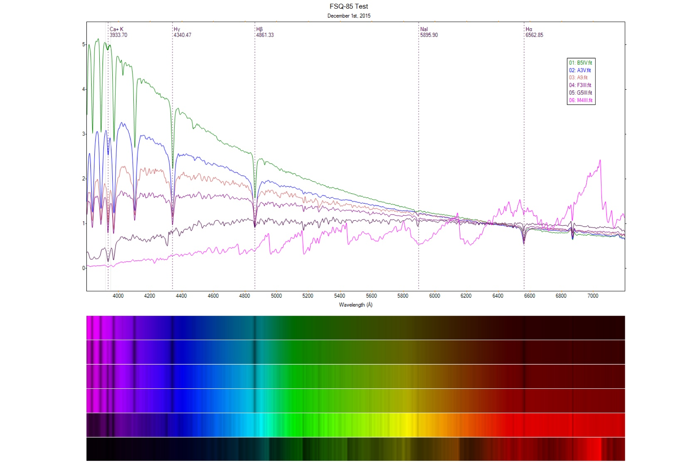

A test of the Shelyak Alpy 600 using a Takahashi FSQ-85 shows extremely well corrected spectra, particularly notable at shorter wavelengths which are typically problematic for refractors of simpler design.
A link to the report: FSQ-85 and the Alpy 600 